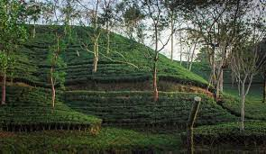

From pure, organic black tea, to the most luxurious and smooth chai. We give you the
best tea from all of South
Asia.

Some Random Information
Tea reached Europe in the 16th Century but people were using ceramic teapots in Asia and the Middle East 11,000 years ago.
According to legend, in 2732 BC Emperor Shen Nung discovered tea when leaves from a wild tree blew into his pot of boiling water.
Tea cups didn’t always have handles. At first, the English made cups without handles, influenced by the traditional Chinese tea bowls.
In 1840, afternoon tea was introduced in England by Anna, the seventh Duchess of Bedford.
If you are cold, tea will warm you
if you are too heated, it will cool you
if you are depressed, it will cheer you
if you are excited, it will calm you.
― William Ewart Gladstone
Call to action! It's time!
Browse our products by clicking that button right over there!